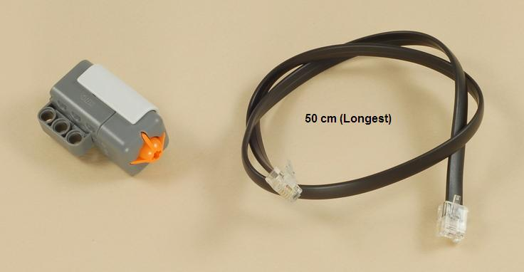
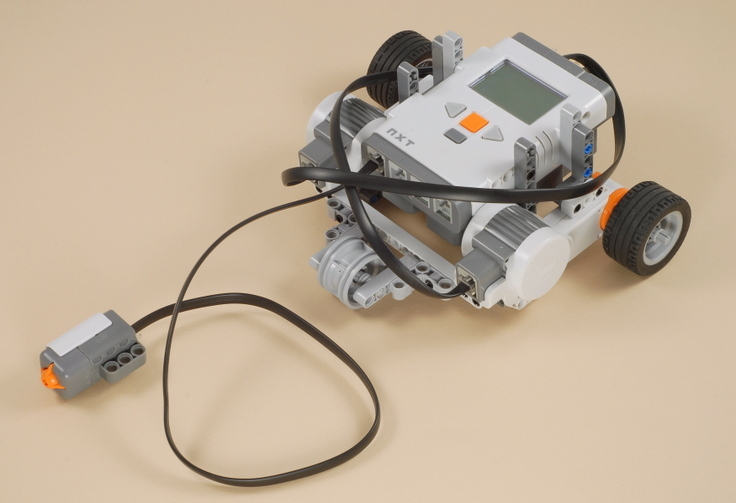
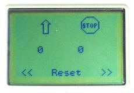
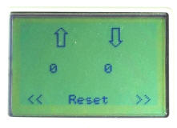
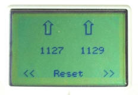
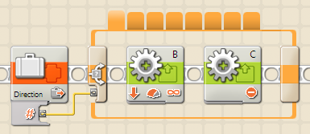

Fun Projects for your LEGO� MINDSTORMS� NXT!
|
|
Fun Projects for your LEGO� MINDSTORMS� NXT! |
| Path Measurer |
|

1-6
| Start by building a robot vehicle with 2-motor drive, such as the Five Minute Bot (Click the picture for building instructions). |
|
|
7

| Connect the wire from the touch sensor to port 1 on the NXT. |

| Path
Measurer Programming Two different programs are provided for the Path Measurer. These programs can be used on any robot with standard 2-motor drive (one motor drives a left wheel and one motor drives a right wheel), although you may need to modify the programs to account for differences in orientation of the motors (forward vs. backward) or the NXT (which motor port is on the left side). See the instructions below. The PathMeasure program provides an easy way to measure path segments with three types of movement: straight forward, and one-wheeled turns to the left and right. See the instructions below. The MoveMeasure is a more complex program that provides eight types of movement, including three types of turns in each direction, and straight forward and backward motions. See the instructions below. |
Using the PathMeasure ProgramThe PathMeasure program allows you to select from three directions for each of the segments in your path: straight forward and one-wheeled turns left and right. If you want to measure different kinds of turns, such as pivot turns where the wheels turn opposite directions, use the MoveMeasure program instead. The PathMeasure program can be used as follows:
Modifying the PathMeasure Program to Match your Robot
|
||||||||||||||||||||||||||||||||||||||||||||||||||||||||||||||
| Left Arrow Button: | Select Previous Motion Type |
| Right Arrow Button: | Select Next Motion Type |
| Enter Button: | Reset Rotation Sensors to Zero |
| Press and Hold Touch Sensor: | Drive in the Selected Direction |
As with the PathMeasure program, you can press the touch sensor more than once to complete a motion if desired, and you can also adjust the wheel positions by hand at the end of the motion if desired.
| Motion | Motor B | Motor C | |
| 1 | Left Reverse Turn | Backward | Stop |
| 2 | Left Pivot Turn | Backward | Forward |
| 3 | Left one-wheeled Turn | Stop | Forward |
| 4 | Straight Forward | Forward | Forward |
| 5 | Right one-wheeled Turn | Forward | Stop |
| 6 | Right Pivot Turn | Forward | Backward |
| 7 | Right Reverse Turn | Stop | Backward |
| 8 | Straight Reverse | Backward | Backward |
|  |  |  |
|
Two icons on the top of the screen display the selected motion type by indicating which direction the motor on that side of the robot will move (forward, backward, or stop). |
Rotation measurements in degrees are displayed for the left and right motors. |
|
Modifying the MoveMeasure Program to Match your Robot
| As written, the
MoveMeasure program
assumes that the motors should be run in the "forward" direction
to make the robot move forward, and that motor B is on the left
of the robot and motor C is on the right (like the settings on
the configuration panel for the Move block). If your robot
needs different settings, you will need to modify the
MoveMeasure program.
To modify the MoveMeasure program, find the 8-tabbed Switch in the lower sequence of the program pictured to the right. Click on the tabs to show the Motor and Move blocks used for the eight motion directions and change them as necessary (see the table of motions above). |
 |
Challenges
|
|
|